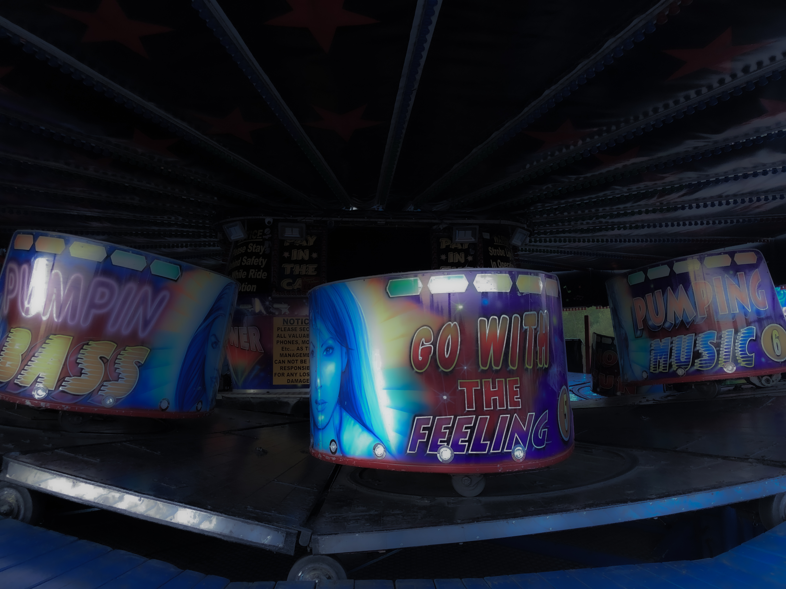
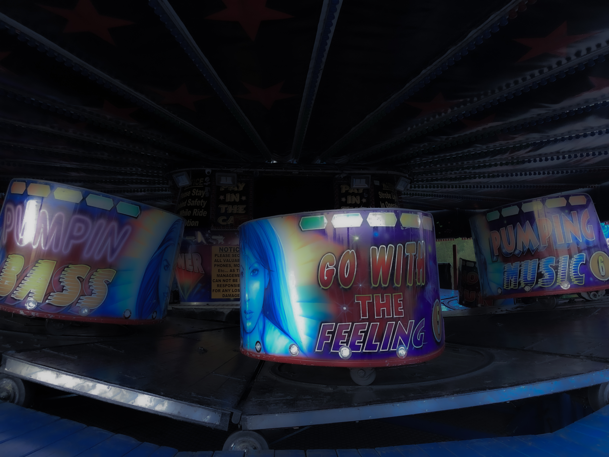
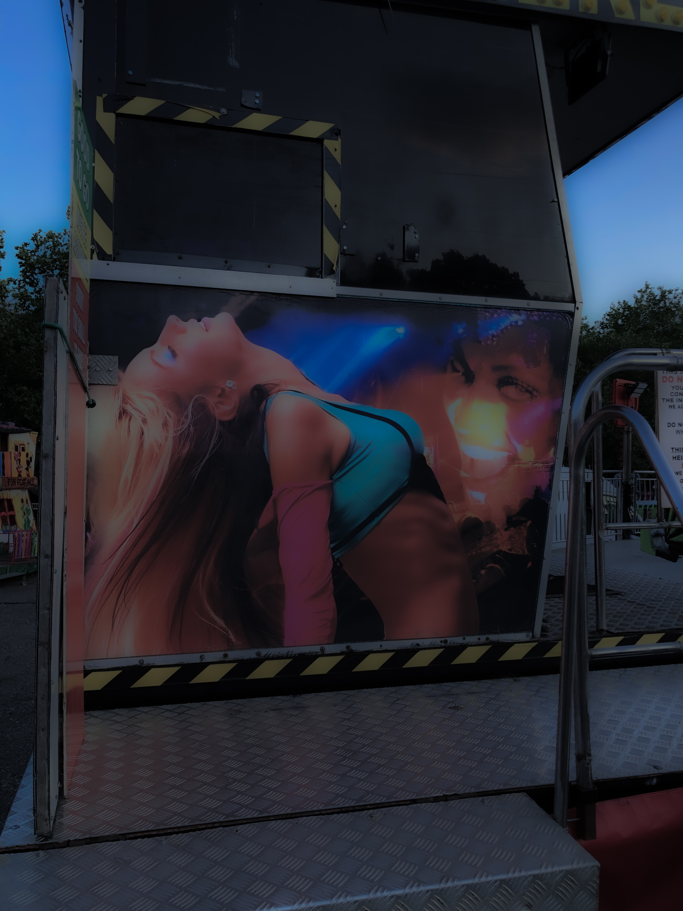
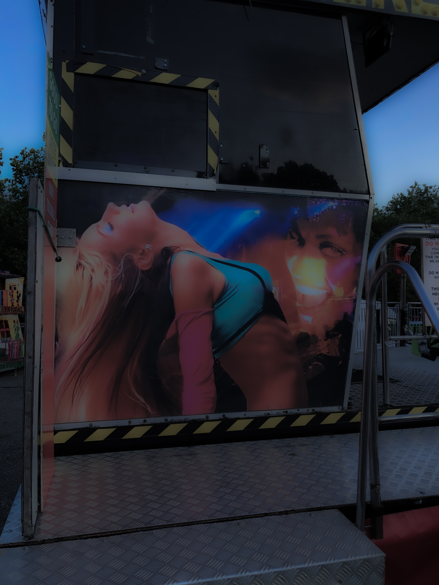

Today we to talk about the ambience. Suburban upbringing does not come without the sense of privilege for the ability to take a moment from the problems in urban hymns and not the one which Velvet Underground sang about, but more son of the ones that are present in the Metal Machine Music. The constant clattering, noice - the hymns of the city
Growing up the simple pleasure of finding the so-called peace within the singular presence, it is an escape. Closing a loop, the city expands, replacing the bark trees with concrete ones. Although the problems in Urban Living are not for what this piece is wrote for - today we talk about ambience.
Years later, when the formed desire for the ambience turned into a habit, the absence and presence of the feeling becomes so apparent and obvious. You start looking for that same sense not just in the physical manifestations, but far more beyond. You learn to cherish that feeling, you start to see it in the places where perhaps it is not to be seen.
And then there is the web — vast, silent, fragile. Once built as an eternal storage of information, now cluttered with noise. But between the static and the scroll, there are still shadows of something slower. Interfaces that breathe. A hyperlink, like a path. A webpage, like a memory. The walk doesn’t end at the screen — it refracts through it. This is a trace of that walk.
WALK 9 of June, 2020
I remember the first time I have visited Hampstead Heath, it was during the pandemic. Trying to grasp for that ambience amongst the noice, something that has resembled that calm, that stillness from the childhood nostalgia for the simpler times. It was not the one mediated or manufactured, but the very essence of true calm - the natural rhythm of leaves distant birdsongs, gravel underfoot screeching to the beat of the steps.

It was almost like an interface opening up. There was something about rediscovering such feeling for the first time. It felt somehow computational, in it is strange but yet so evident way. The feeling emerged through the interaction - input, output, sensing, responding
But poetic, not very much mechanical.
The memory of it, yet faint is somewhere there. The interface is somewhere there.
observer
Somewhere now, this water ripples, light bending on the surface, the birds vanishing behind the vegetation.
You are there watching. But the camera offers no warmth, no scent of the air, no sound of that gravel under your feet and the gentle smell of calmness.
Illusion of access.The stream is a window, just like what you are reading. A transmission without a touch. On one of the nights a picture was taken, of the gentle greens. You can touch it, feel it, sense it.
But you are not there. You are a passive observer, you can not change, just merely see what is.
Yet something about it still lingers, a digital echo of that walk. A soft reminder of where I have once stood and where you might stand.
Ambience is found in presence, now shimmers through such transmission. Unreachable, unresponsive, and somehow still affecting.
 

 

BUT ITS NOT
And maybe, just maybe, it wasn’t only in the physical.
There was a time, not too long ago, when that same feeling — drifting through margins, the sensing, the quiet — could be found on the internet. Not in the structured, monetised version of it we scroll through today, but in the earlier, messier one. The one full of odd little corners, strange dead ends, and half-finished ideas just like the one in front of you.
It was a different kind of noise — softer, somehow. Fuzzier.
Back then, the web felt like a landscape. Not a product.
there were places where that ambience lived. The kind that didn’t shout, didn’t sell. Just sat there, waiting. Maybe a blog last updated in 2009. Maybe a zipped folder passed between friends.
But as we started going away all things, those places started vanishing..
links broke servers shut down neglected websites.
The ambience leaked out. The ghosts stayed behind.
BUT
hope is there. there is no need for primitive digital nostalgia
YET
it is on us to find that ambience in the space we call the web
Diary entry 2 of April